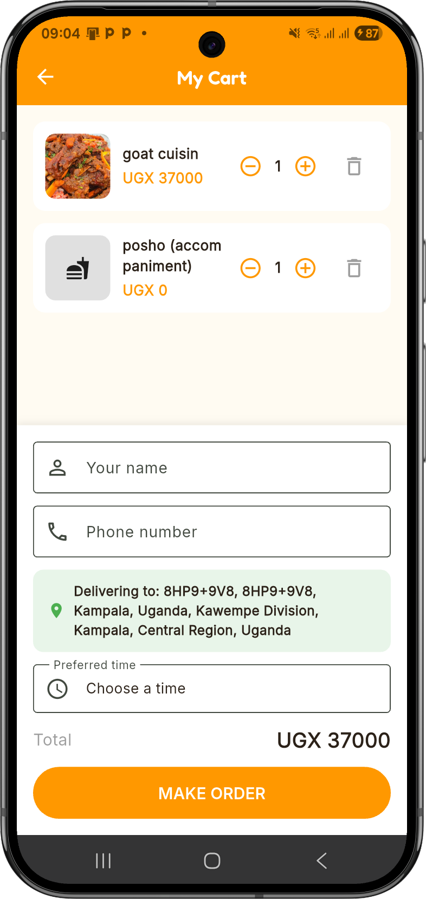
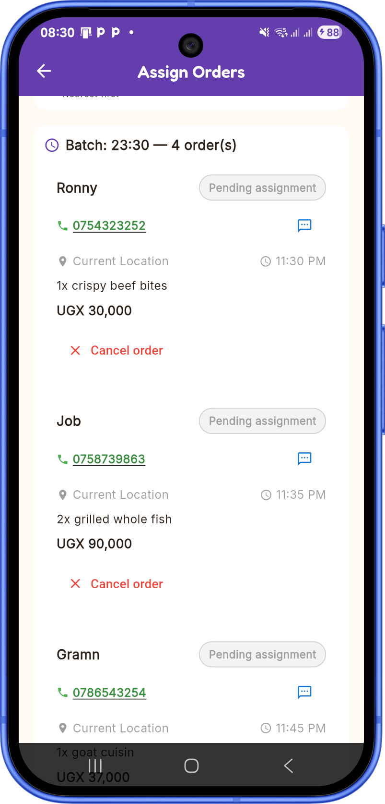
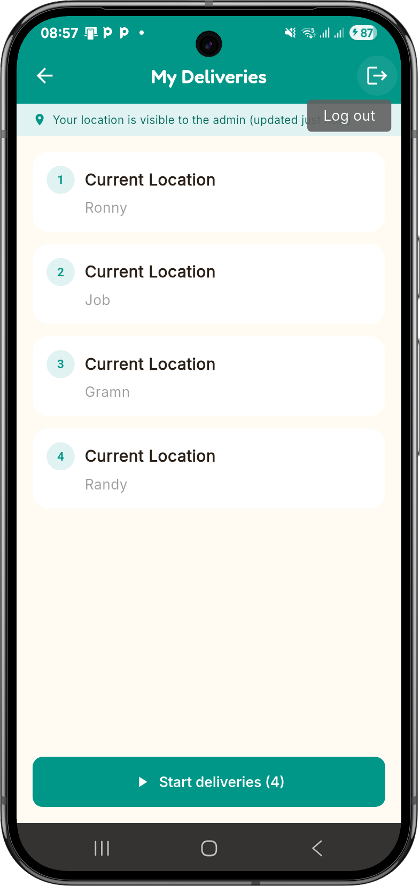
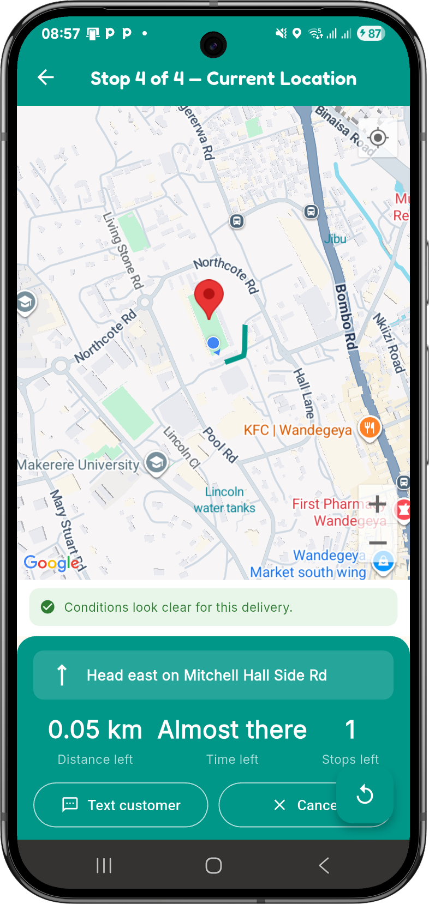
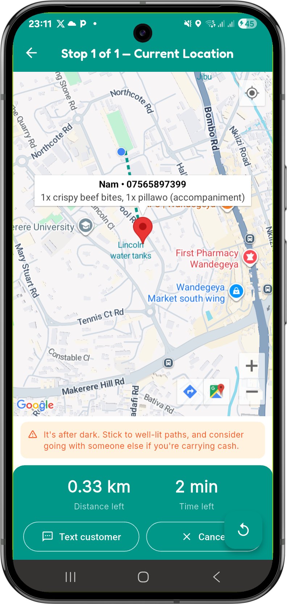
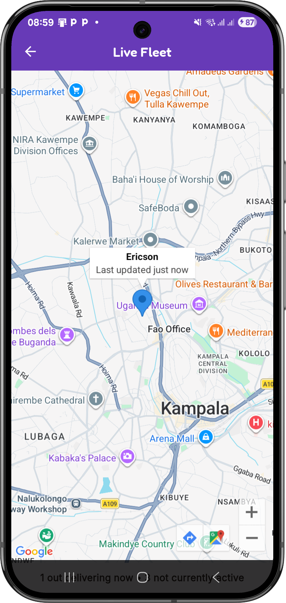
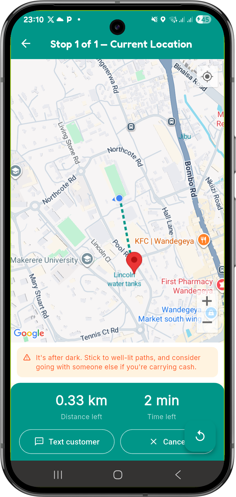

Overview
Quick Deliveries is a Flutter and Firebase-based food ordering and delivery system, built as a university project at Makerere University - but not limited to it. Customers browse a menu and place an order in a couple of taps - no account required. Behind the scenes, an admin groups incoming orders by delivery time and hands each batch to a delivery guy, who gets a single "Start" button that opens live, voice-guided, traffic-aware navigation straight to the customer's location - whether that's a hall of residence on campus, or anywhere else in Kampala the order needs to go.
The system is built around three roles sharing one login screen - customer, admin, and delivery guy - with the experience shown to each person decided entirely by their account's role, not by which screen they happen to open.
Features

Customers can browse the menu, add items to a cart, and place an order without ever creating an account - the app signs them in anonymously behind the scenes, so there's no signup friction between being hungry and getting food.

Orders due around the same time are grouped into batches automatically, so the admin can hand a whole batch to one delivery guy at once instead of assigning orders one by one.

Once assigned, a delivery guy sees a single "Start" button covering every stop he's been given. Tapping it works out the fastest order to visit them in - real traffic-aware minutes from Google, not just raw distance - then guides him through each one with spoken, turn-by-turn directions.

There's no second "mark as delivered" button to remember - the moment the delivery guy's phone gets close enough to a stop, it's marked delivered automatically, and navigation moves straight on to the next one.

Before a delivery guy sets off, the app checks current weather and time of day, and speaks a warning aloud if it's raining, storming, or after dark - the information that actually matters to the person out on the road, not the person sitting at the base.

The admin can see every delivery guy who's currently out on a delivery on one live map, updating as they move - with nothing shown for anyone who isn't actively delivering right now.

Turn-by-turn directions, weather warnings, and arrival confirmations are all spoken aloud automatically, and key screens are labeled for screen readers - so the app remains usable even without being able to see it.
Built With
Flutter & Dart · Firebase (Authentication, Firestore, Cloud Messaging) · Google Maps Platform (Maps SDK, Directions API, Distance Matrix API) · flutter_tts for on-device voice guidance